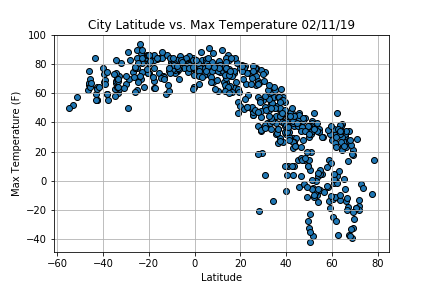

Summary: Latitude vs. X

The purpose of this project was to analyze how weather changes as you get closer to the equator. To accomplish this analysis,
data was first pulled from the OpenWeatherMap API, then over 500 cities accross the world was randomly used to assemble the dataset.
After assembling the dataset, Matplotlib was used to plot various aspects of the weather vs. latitude.
Factors we looked at included:
Temperature, cloudiness, wind speed and humidity.
This site provides the source data and visualizations created as part of the analysis, as well as explanations and descriptions of any trends and correlations witnessed.